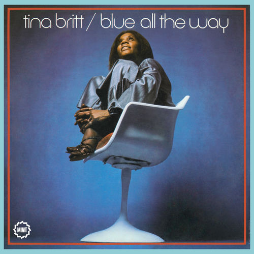

Tina Britt
Tina Britt is an American R&B singer who had two hits on the Billboard R&B chart in the 1960s. She released one album Blue All The Way, and six 45s between 1965 and 1970.
Complete Discography & Tracklists (2)